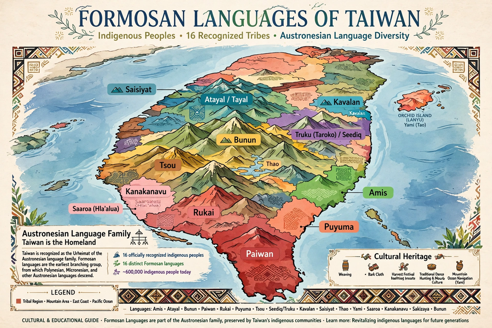

The Formosan languages are the languages of the indigenous peoples of Taiwan. They belong to the Austronesian family and are of exceptional importance to its history: most of the family's primary branches are found only on Taiwan, supporting the theory that Taiwan is the Austronesian homeland from which languages spread across the Pacific and Southeast Asia.

| Formosan languages | |
|---|---|
| Region | Taiwan |
| Family | Austronesian |
| Living languages | ~15–20 recognised |
| Status | Many endangered or extinct |
Living/recognised languages include Amis (the most widely spoken), Atayal, Paiwan, Bunun, Puyuma, Rukai, Tsou, Seediq, Truku, Kavalan, Thao, Kanakanavu, Saaroa, Sakizaya and Tao (Yami) of Orchid Island. Plains languages such as Siraya, Taivoan and Ketagalan became extinct under centuries of Sinicisation, though revival movements exist.
Linguists such as Robert Blust group the Formosan languages into several first-order Austronesian branches, with all other Austronesian languages forming a single Malayo-Polynesian branch — implying settlement of Taiwan roughly 5,000+ years ago followed by expansion outward.
After decades of Mandarin-only policy, Taiwan now teaches indigenous languages in schools, certifies proficiency, and recognised indigenous language status in law (2017). Most Formosan languages remain endangered with ageing speaker bases.